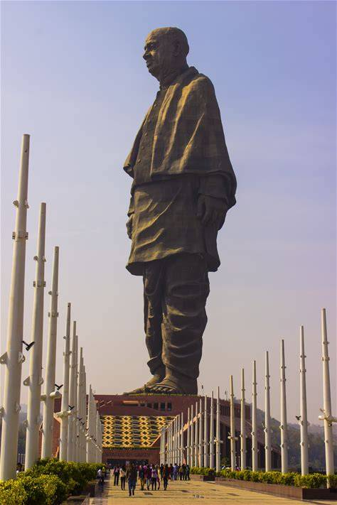
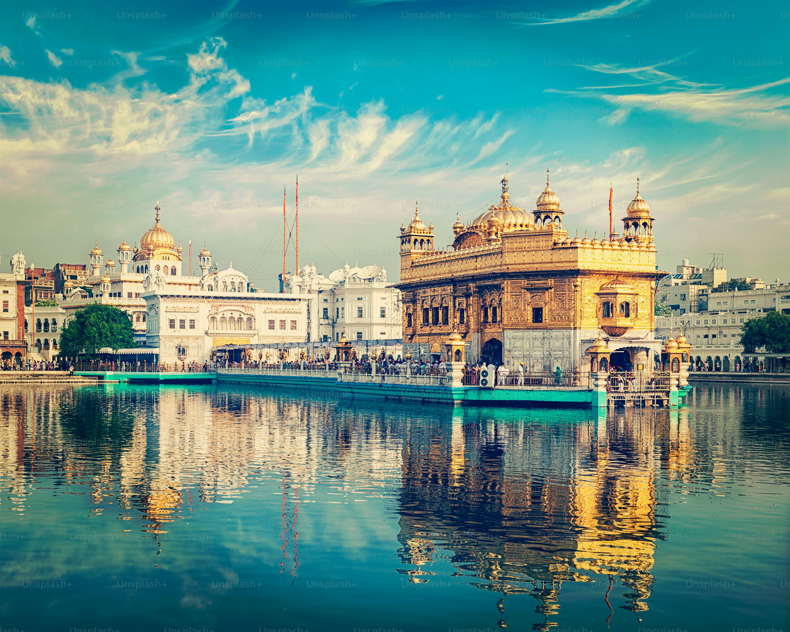
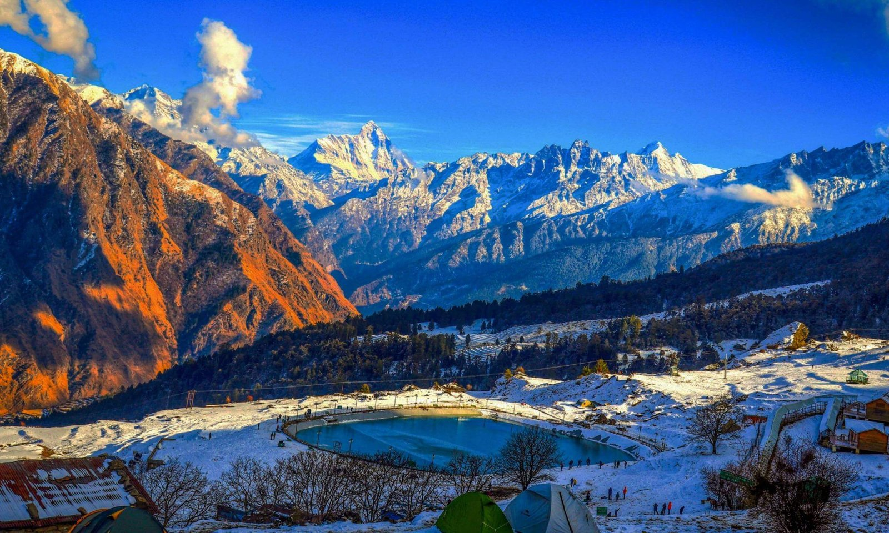

Gujarat is located on the western coast of India. It is a land of great contrast, stretching from the seasonal salt deserts of the Rann of Kutch to the lush uplands of Saputara. It is the only home to the Asiatic Lion.

Rajasthan is India's largest state by area. It is known for the Great Indian Desert (Thar Desert) and its magnificent forts and palaces that showcase the royalty of the Rajput kings.

Punjab, located in the northwest, is known as the granary of India. It is famous for its warm hospitality, golden mustard fields, and the spiritual serenity of the Golden Temple.

Karnataka, in southwest India, offers a mix of glittering palaces, ancient ruins, and a thriving IT hub. It ranges from the heritage sites of Hampi to the misty hills of Coorg.

Uttarakhand is located in the Himalayas and is known for its Hindu pilgrimage sites. It offers breathtaking mountain views, adventure sports like rafting, and spiritual retreats.